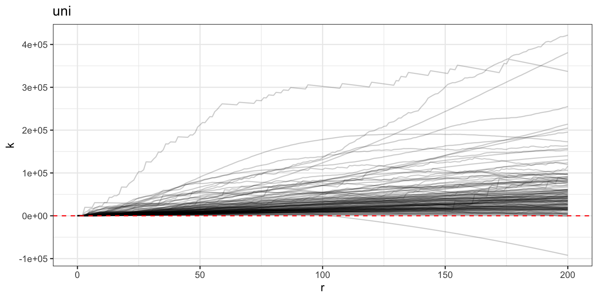
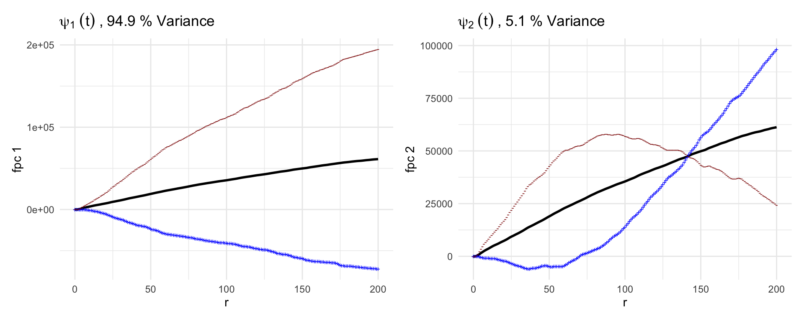

This code briefly showcases the use of the mxfda
package, an R package for performing functional data
analysis on spatial summary functions from single-cell spatial
proteomics data.
Install mxfda package from GitHub:
#install devtools if not available
if (!require("devtools", quietly = TRUE))
install.packages("devtools")
#install from github
devtools::install_github("julia-wrobel/mxfda")First we load libraries used in this tutorial.
library(mxfda)
library(tidyverse)
library(patchwork)Next we load multiplex imaging data. This is a segmented and
phenotyped multiplex immunoflurescence dataset of tumor microarray
images of high grade serous ovarian cancer, used in this
study. The full data are part of the VectraPolarisData
package.
# load processed ovarian cancer data from GitHub
load(url("https://github.com/julia-wrobel/MI_tutorial/raw/main/Data/ovarian.RDA"))ovarian_df <- ovarian_df %>%
filter(tissue_category == "Tumor")
dim(ovarian_df)
## [1] 1292986 35The mxfda package uses an S4 object of class
mxFDA. These objects are created with the
make_mxfda() function.
Slots in the mxFDA object are designated as follows:
Metadata - stores sample specific traits that may be
used as covariates when fitting modelsSpatial - a data frame of cell level information (x and
y spatial coordinates, phenotype, etc.) that can be used to calculate
spatial summary functionssubject_key - a character string for the column in the
metadata that denotes the unique subject idsample_key - a character string for the column in the
metadata that denotes the unique sample id. Note that there may be
multiple samples per subject, and this id links the metadata and spatial
data for each multiplex image sampleunivariate_summaries and
bivariate_summaries - lists of spatial summary functions
either imported with add_summary_function() or calculated
with extract_summary_functions()functional_pca - list of results from functional
principle component analysisfunctional_mpca - list of results from multilevel
functional principle component analysisfunctional_cox - list of functional cox models that
have been fitfunctional_mcox - list of functional mixed cox models
that have been fitBelow, we convert the ovarian cancer data to an MxFDA object.
clinical = ovarian_df %>%
select(sample_id, age = age_at_diagnosis, survival_time, death, stage_bin) %>%
distinct()
spatial = ovarian_df %>%
select(-age_at_diagnosis, -survival_time, -death, -stage_bin)
mxf = make_mxfda(metadata = clinical,
spatial = spatial,
subject_key = "sample_id",
sample_key = "sample_id")
rm(ovarian_df, clinical, spatial)Check out the new MxFDA object:
summary(mxf)
## mxFDA Object:
## Subjects: 128
## Samples: 128
## Has spatial data
## Univariate Summaries: None
## Bivariate Summaries: None
## FPCs not yet calculated
## MFPCs not yet calculated
## FCMs not yet calculated
## MFCMs not yet calculatedclass(mxf)
## [1] "mxFDA"
## attr(,"package")
## [1] "mxfda"You can use the mxfda package to calculate univariate
and bivariate Ripley’s K and nearest neighbor G-functions, or you can
input your own spatial summary functions. Below we calculate univariate
Ripley’s K for immune cells in the dataset.
mxf = extract_summary_functions(mxf,
extract_func = extract_univariate,
summary_func = Kest,
r_vec = seq(0, 200, by = 1),
edge_correction = "iso",
markvar = "immune",
mark1 = "immune")Running this code will calculate univariate Ripley’s K function for
immune cells in each image, and will store these spatial summary
functions in the univariate_summaries slot of the S3
mxf object. To access this slot and view the extracted
summary functions, type:
mxf@univariate_summaries$Kest
## # A tibble: 25,728 × 6
## sample_id r sumfun csr fundiff `immune cells`
## <dbl> <dbl> <dbl> <dbl> <dbl> <int>
## 1 68 0 0 0 0 198
## 2 68 1 0 3.14 -3.14 198
## 3 68 2 0 12.6 -12.6 198
## 4 68 3 536. 28.3 508. 198
## 5 68 4 1010. 50.3 960. 198
## 6 68 5 1446. 78.5 1368. 198
## 7 68 6 1903. 113. 1790. 198
## 8 68 7 2757. 154. 2603. 198
## 9 68 8 2946. 201. 2745. 198
## 10 68 9 3231. 254. 2976. 198
## # ℹ 25,718 more rowsThe summaries are returned as a dataframe. The variable
sumfun is the estimated summary function value,
csr is the theoretical value under complete spatial
randomness, and fundiff =
sumfun-csr; in downstream analysis we will use
the fundiff covariate.
Next, plot the spatial summary functions we just estimated.
plot(mxf, y = "fundiff", what = "uni k") +
geom_hline(yintercept = 0, color = "red", linetype = 2)
Values above the dotted red line are interpreted as having more spatial clustering among immune cells at radius \(r\) than would be expected under complete spatial randomness.
Below we run FPCA on these K-function curves, using the
run_fpca() function, and store these results in the
mxf object.
mxf <- run_fpca(mxf,
metric = "uni k",
r = "r",
value = "fundiff",
pve = .99)Note that the summary of this object now shows the number of functional principal components (FPCs) that have been calculated:
mxf
## mxFDA Object:
## Subjects: 128
## Samples: 128
## Has spatial data
## Univariate Summaries: Kest
## Bivariate Summaries: None
## FPCs Calculated:
## Kest: 3 FPCs describe 99.4% variance
## MFPCs not yet calculated
## FCMs not yet calculated
## MFCMs not yet calculatedBelow we plot the first two functional principal components from our FPCA analysis of the K functions.
p1 = plot(mxf, what = 'uni k fpca', pc_choice = 1)
p2 = plot(mxf, what = 'uni k fpca', pc_choice = 2)
(p1 + p2)
The black line in each plot is the mean of the data. In these plots, the blue and red lines represent one standard deviation of the FPC added (blue) or subtracted (red) from the population mean.
Linear functional Cox regression
mxf <- run_fcm(mxf, model_name = "fit_lfcm",
formula = survival_time ~ age,
event = "death",
metric = "uni k",
r = "r",
value = "fundiff",
afcm = FALSE)summary(extract_model(mxf, 'uni k', 'fit_lfcm'))
##
## Family: Cox PH
## Link function: identity
##
## Formula:
## survival_time ~ age + s(t_int, by = l_int * func, bs = "cr",
## k = 20)
##
## Parametric coefficients:
## Estimate Std. Error z value Pr(>|z|)
## age 0.01320 0.01123 1.176 0.24
##
## Approximate significance of smooth terms:
## edf Ref.df Chi.sq p-value
## s(t_int):l_int * func 2 2.001 8.927 0.0115 *
## ---
## Signif. codes: 0 '***' 0.001 '**' 0.01 '*' 0.05 '.' 0.1 ' ' 1
##
## Deviance explained = 3.35%
## -REML = 357.15 Scale est. = 1 n = 128